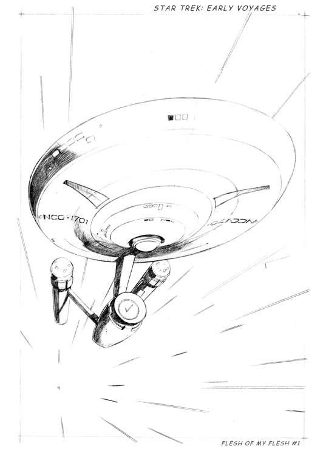
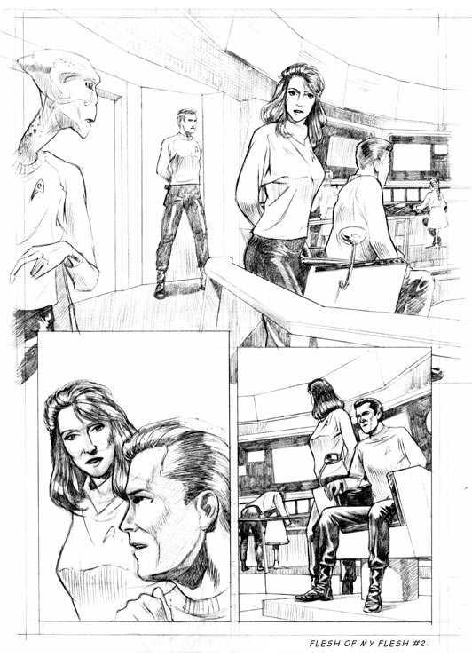
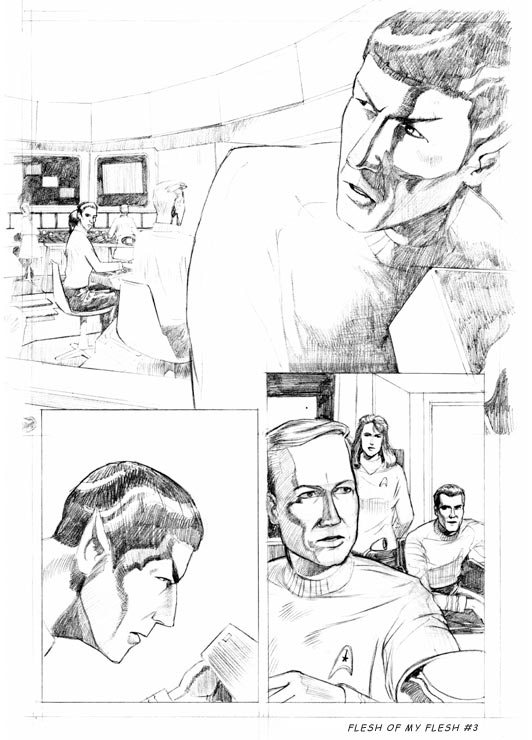
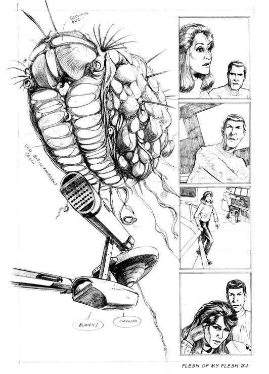
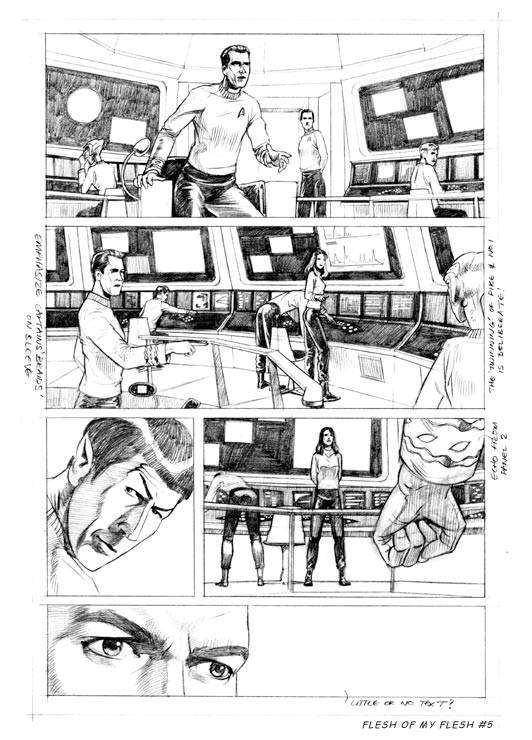
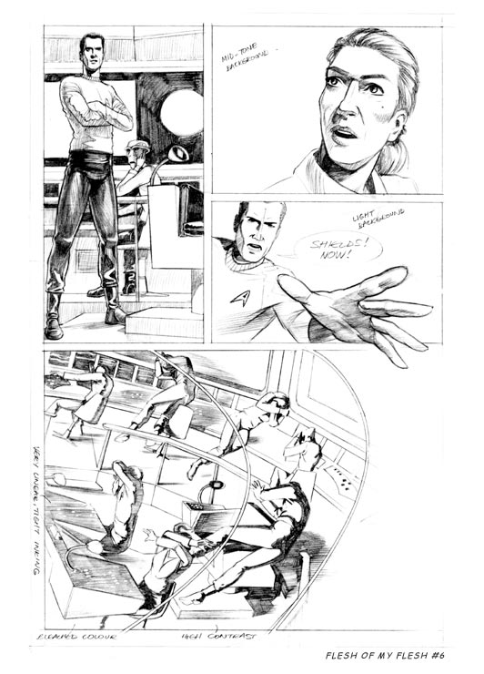

|


|
Gnese
| Episdios I Reflexes
| Palavras do autor | Palavras
do artista Universo
paralelo Material produzido por Salvador Nogueira para o Trek Brasilis Quando um trabalho bom, normalmente provoca ramificaes e consequncias que seu criador original dificilmente poderia prever. A publicao de "Early Voyages", por exemplo, quase levou ao surgimento de um talentoso desenhista de quadrinhos de Jornada nas Estrelas. Em 1998, o artista britnico Richard Smith sonhava em obter trabalhos como quadrinista. Ele conheceu Dan Abnett, o roteirista da srie, numa biblioteca no Reino Unido --Dan estava justamente dando uma palestra sobre roteirizao de histrias em quadrinhos. "Eu mostrei a ele alguns dos meus primeiros trabalhos e ele ficou muito impressionado", conta Smith. "Ele sugeriu que poderia tentar trabalhar em meu favor e oferecer meu nome para editores e outros escritores com quem ele trabalhava na indstria dos quadrinhos. Naquela poca, ele estava trabalhando na srie 'Early Voyages' e enviou para mim uma cpia do roteiro da primeira edio, usada pelo artista que originalmente produziu a verso publicada da histria." A partir daquele roteiro, Smith riscou as seis primeiras pginas, sem ver a verso publicada da revista antes de ter concludo. "Eu produzi minha verso do roteiro algum tempo aps a publicao. Dan me enviou uma cpia da revista (eu no a conhecia na poca), junto com o roteiro. Eu mantive a revista trancafiada at terminar minha verso, e ento comparei os resultados. Foi um bom modo de comparar minha abordagem com a da arte que acabou sendo publicada. Preciso dizer, eu acho que fiz um trabalho melhor, mas eu no trabalhei com um 'deadline', ento pude gastar tempo com os detalhes da Enterprise e da ponte", disse. "Dan ficou muito impressionado com o que produzi e parecia animado de me ter com ele neste ou em outros projetos." Mas a srie acabou cancelada prematuramente, Abnett parece ter tomado outros rumos e o contato entre o desenhista e o escritor acabou sendo cortado. Apesar disso, Smith tem boas memrias daquele falso incio. "Eu gostei de trabalhar nas pginas que voc viu, e, como sou um grande f de Jornada nas Estrelas, foi timo desenhar a Enterprise. Eu vi o episdio piloto repetidas vezes --Dan me enviou uma fita--, para que eu pudesse captar as expresses de Pike, da Nmero Um e da ponte original. Desenhei Spock como ele aparecia na srie, e ele estava bem diferente no episdio-piloto. Gostei de desenhar a famosa sombrancelha erguida." De agora em diante, Smith no parece animado com a indstria dos quadrinhos. "Bem, acho que meus dias de revistas em quadrinhos esto acabados. Perdi muito do amor pela indstria aps ser rejeitado constantemente. Sem querer soar convencido, eu sabia que meu trabalho era melhor do que muitos artistas publicados, mas eu no conseguia achar um meio de ser publicado. Suponho que no fim eu no tenha sido determinado o suficiente, ou teria trabalhado de graa para editoras independentes. Mas eu tinha contas a pagar." O trabalho que voc vai ver logo abaixo so as seis pginas que Smith produziu em 1998. Elas podem ser vistas como uma verso "universo-do-espelho" da primeira edio de "Early Voyages". Claro que os desenhos foram publicados em sua forma original, a lpis, sem arte-final ou cor.       |